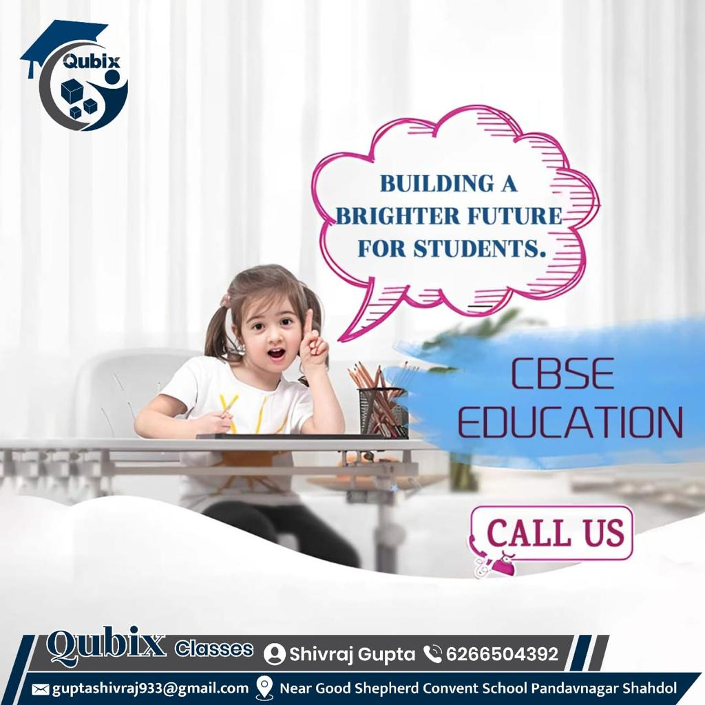

Welcome to Qubix Classes – Where Excellence Meets Education!
Welcome to Qubix Classes – Where Excellence Meets Education!
Introduction:
At Qubix Classes, we believe in the transformative power of education. Established with a deep-rooted passion for nurturing young minds and fostering academic brilliance, our coaching institute is dedicated to shaping the future leaders of tomorrow. We understand that education is not merely about imparting knowledge but about inspiring and empowering students to reach their fullest potential. Our tailored programs are designed to cater to the diverse needs of each student, providing them with the skills, confidence, and critical thinking abilities necessary to excel in their academic pursuits and beyond. Our approach to education goes beyond traditional teaching methods. We focus on creating a dynamic and interactive learning environment that encourages curiosity and a love for learning. By integrating innovative teaching techniques, personalized attention, and a supportive atmosphere, we aim to make learning an enjoyable and enriching experience. Our experienced educators are not only experts in their respective fields but also dedicated mentors who are committed to guiding students through their educational journey with patience and care. At Qubix Classes, we recognize that every student has unique strengths and challenges. That’s why we offer a range of programs and resources designed to address individual needs, from foundational courses to advanced studies. We provide regular assessments and feedback to ensure that students are making progress and to identify areas where additional support may be needed. Our goal is to equip students with the knowledge, skills, and mindset to overcome obstacles and achieve their goals, both academically and personally.
Our Commitment:
At Qubix, we stand out from the rest. Our institute goes beyond traditional teaching methods, embracing innovative approaches to make learning a dynamic and engaging experience. We take pride in our team of experienced educators who are not just teachers but mentors, guiding students on their journey to success. Our commitment to educational excellence is reflected in our use of cutting-edge technology and interactive learning tools, which enhance the learning process and make complex concepts more accessible. We offer personalized learning plans tailored to each student's unique needs, ensuring that every individual receives the support and encouragement they require to thrive. Our educators are dedicated to fostering a positive and inclusive learning environment where students feel motivated and empowered to reach their full potential. They are actively involved in the development of our curriculum, ensuring it is both relevant and challenging, and they continually adapt their teaching strategies to meet the evolving needs of our students. Beyond academics, we emphasize the importance of critical thinking, creativity, and problem-solving skills, preparing students for real-world challenges and future opportunities. At Qubix, we believe in the holistic development of our students, focusing on both their intellectual and personal growth. We provide a range of extracurricular activities and enrichment programs designed to cultivate their interests and talents, helping them build confidence and leadership skills. Our goal is to create a nurturing and stimulating environment where students can explore their passions, develop their abilities, and achieve their aspirations. By combining innovative teaching methods with a strong commitment to student success, Qubix sets a new standard in education. We are dedicated to creating an environment where every student can excel, and we strive to inspire a lifelong love of learning that extends beyond the classroom.

Courses Tailored for Success:
Explore our diverse range of courses designed to cater to various academic needs and aspirations. Whether you're preparing for competitive exams, seeking assistance in specific subjects, or aiming to enhance your overall academic performance, Qubix Classes has the right program tailored just for you. Our offerings include comprehensive test preparation courses, specialized tutoring in subjects such as mathematics, science, and languages, as well as enrichment programs designed to deepen understanding and foster a love for learning. We understand that every student has unique learning needs and goals, which is why our courses are meticulously designed to address different educational requirements. From foundational courses that build essential skills to advanced programs that challenge and expand your knowledge, we provide a variety of options to suit your academic journey. Our expert instructors bring years of experience and a wealth of knowledge to each course, ensuring that you receive the highest quality education and personalized attention. In addition to our core academic programs, we offer specialized workshops and seminars that focus on skill development, study techniques, and exam strategies. These are aimed at equipping students with practical tools and insights to excel in their studies and achieve their academic objectives. Our commitment to your success is reflected in our continuous efforts to update and enhance our curriculum based on the latest educational trends and feedback from students. At Qubix Classes, we are dedicated to supporting you every step of the way. Whether you’re aiming for top scores in competitive exams or seeking to improve in specific subject areas, our tailored programs and dedicated educators are here to help you succeed. Explore our course offerings today and discover how we can help you achieve your academic goals and unlock your full potential.